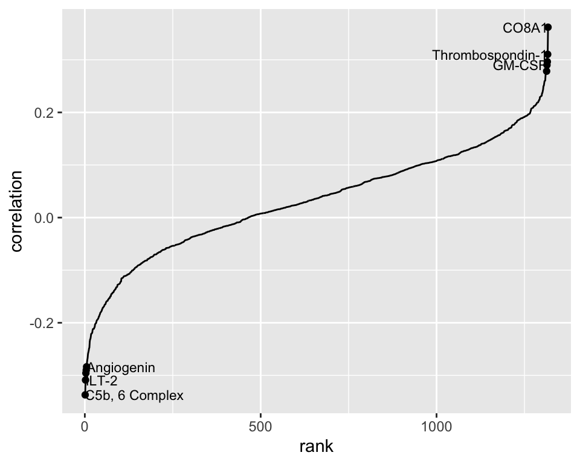
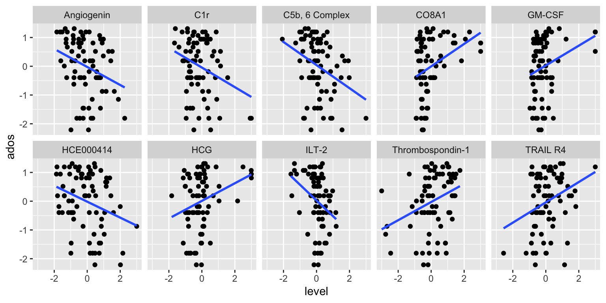
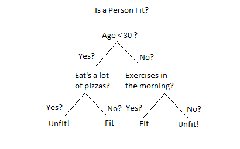
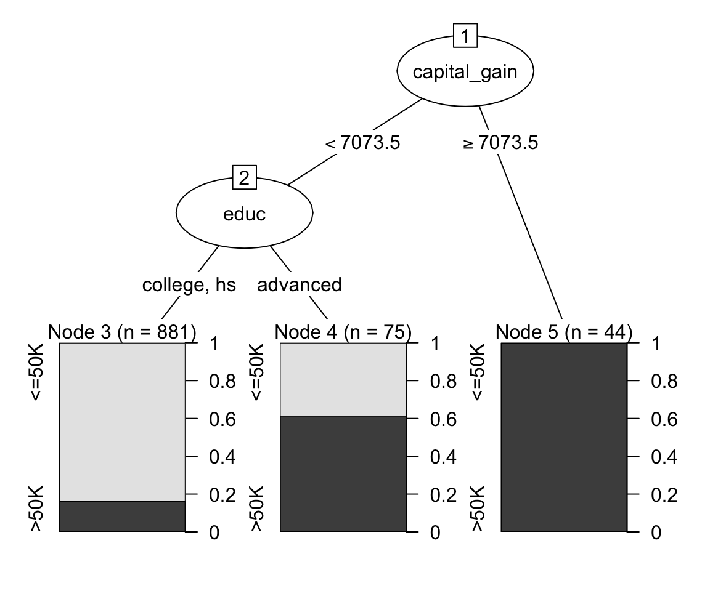

# A tibble: 4 × 2
# Groups: group [2]
group ados
<chr> <dbl>
1 ASD 19
2 ASD 12
3 TD NA
4 TD NAPSTAT197A/CMPSC190DD Fall 2025
UCSB
Make your final commits for the first group assignment by Sunday 10/19 11:59pm PST
report.qmd and report.html with your write-upNext group assignment to be distributed Tuesday 10/21.
introduced ASD proteomic dataset
used multiple testing corrections to identify proteins whose serum levels differ significantly between ASD/TD groups
discussed the difference between controlling familywise error vs. false discovery
We’ll talk about two more approaches to identifying proteins of interest:
correlation-based identification of proteins
random forest classifier
Autism Diagnostic Observation Schedule (ADOS) scores are determined by psychological assessment and measure ASD severity.
# A tibble: 4 × 2
# Groups: group [2]
group ados
<chr> <dbl>
1 ASD 19
2 ASD 12
3 TD NA
4 TD NAados is only measured for the ASD group
numerical score between 6 and 23 (at least in this sample)
So here’s an idea:
compute correlations of each protein with ADOS;
pick the 10 proteins with the strongest correlation
This is a simple aggregation operation and can be executed in R with summarize() :
# A tibble: 1,317 × 2
protein correlation
<chr> <dbl>
1 14-3-3 0.0970
2 14-3-3 protein beta/alpha 0.0481
3 14-3-3 protein theta 0.122
4 14-3-3 protein zeta/delta 0.0735
5 14-3-3E -0.127
6 17-beta-HSD 1 0.0969
7 3HAO 0.0773
8 3HIDH 0.0452
9 4-1BB 0.0290
10 4-1BB ligand 0.0799
# ℹ 1,307 more rows
# A tibble: 10 × 4
protein correlation abs.corr rank
<chr> <dbl> <dbl> <int>
1 CO8A1 0.362 0.362 1317
2 C5b, 6 Complex -0.337 0.337 1
3 Thrombospondin-1 0.310 0.310 1316
4 ILT-2 -0.309 0.309 2
5 TRAIL R4 0.296 0.296 1315
6 HCE000414 -0.296 0.296 3
7 C1r -0.290 0.290 4
8 GM-CSF 0.290 0.290 1314
9 Angiogenin -0.284 0.284 5
10 HCG 0.278 0.278 1313
Fact: the simple linear regression coefficient estimate is proportional to the correlation coefficient.
So it should give similar results to sort the SLR coefficients by significance.
# A tibble: 1,317 × 3
protein estimate p.value
<chr> <dbl> <dbl>
1 CO8A1 0.391 0.00131
2 C5b, 6 Complex -0.401 0.00290
3 Thrombospondin-1 0.317 0.00635
4 ILT-2 -0.546 0.00664
5 TRAIL R4 0.353 0.00933
6 HCE000414 -0.278 0.00950
7 C1r -0.341 0.0110
8 GM-CSF 0.345 0.0110
9 Angiogenin -0.314 0.0130
10 HCG 0.306 0.0149
# ℹ 1,307 more rowsIf we do the correlation analysis this way, do the identified proteins pass multiple testing significance thresholds?
# A tibble: 10 × 3
protein p.value p.adj
<chr> <dbl> <dbl>
1 CO8A1 0.00131 0.0145
2 C5b, 6 Complex 0.00290 0.0342
3 Thrombospondin-1 0.00635 0.112
4 ILT-2 0.00664 0.0641
5 TRAIL R4 0.00933 1.29
6 HCE000414 0.00950 0.916
7 C1r 0.0110 0.242
8 GM-CSF 0.0110 0.124
9 Angiogenin 0.0130 0.142
10 HCG 0.0149 0.159 probably just introducing selection noise
but also, this result diverges considerably from the paper (?)
The SLR approach is equivalent to sorting the correlations. (Take a moment to check the results.)
We could use inference on the population correlation to obtain a \(p\)-value associated with each sample correlation coefficient. These match the ones from SLR.
cor_test <- function(x, y){
cor_out <- cor.test(x, y)
tibble(estimate = cor_out$estimate,
p.value = cor_out$p.value)
}
asd_clean %>%
pivot_longer(cols = -ados,
names_to = 'protein',
values_to = 'level') %>%
group_by(protein) %>%
summarize(correlation = cor_test(ados, level)) %>%
unnest(correlation) %>%
arrange(p.value)# A tibble: 1,317 × 3
protein estimate p.value
<chr> <dbl> <dbl>
1 CO8A1 0.362 0.00131
2 C5b, 6 Complex -0.337 0.00290
3 Thrombospondin-1 0.310 0.00635
4 ILT-2 -0.309 0.00664
5 TRAIL R4 0.296 0.00933
6 HCE000414 -0.296 0.00950
7 C1r -0.290 0.0110
8 GM-CSF 0.290 0.0110
9 Angiogenin -0.284 0.0130
10 HCG 0.278 0.0149
# ℹ 1,307 more rowsA binary tree is a directed graph in which:
there is at most one path between any two nodes
each node has at most two outward-directed edges
A classification tree is a binary tree in which the paths represent classification rules.

A goofy classification tree.
Say we want to predict income based on captial gains and education level using census data.
# A tibble: 6 × 3
# Groups: income [2]
income educ capital_gain
<fct> <fct> <dbl>
1 <=50K hs 0
2 <=50K advanced 0
3 <=50K college 0
4 >50K hs 7688
5 >50K hs 7688
6 >50K college 5178We could construct a classification tree by ‘splitting’ based on the values of predictor variables.

To get a sense of the process of tree construction, we’ll do an activity in groups: each group will build a tree ‘by hand’.
first let’s look at the instructions together
then take about 15-20 minutes to do it
A random forest is a classifier based on many trees. It is constructed by:
building some large number of \(T\) trees using bootstrap samples and random subsets of predictors (what you just did, repeated many times)
taking a majority vote across all trees to determine the classification
So let’s take a vote using your trees!
If the number of trees \(T\) is large (as it should be):
trees are built using lots of random subsets of predictors
can keep track of which ones are used most often to define splits
Variable importance scores provide a measure of how influential each predictor is in a random forest.
Back to the proteomics data, the variable importance scores from a random forest provide another means of identifying proteins.
# A tibble: 10 × 1
protein
<chr>
1 DERM
2 IgD
3 MAPK14
4 Notch 1
5 RELT
6 ALCAM
7 ERBB1
8 eIF-4H
9 CK-MB
10 TGF-b R IIIBut how accurate is the predictor?
| ASD | TD | class.error | |
|---|---|---|---|
| ASD | 53 | 23 | 0.3026316 |
| TD | 19 | 59 | 0.2435897 |
logistic regression
variable selection
a design view of the proteomic analysis
PSTAT197A/CMPSC190DD Fall 2025